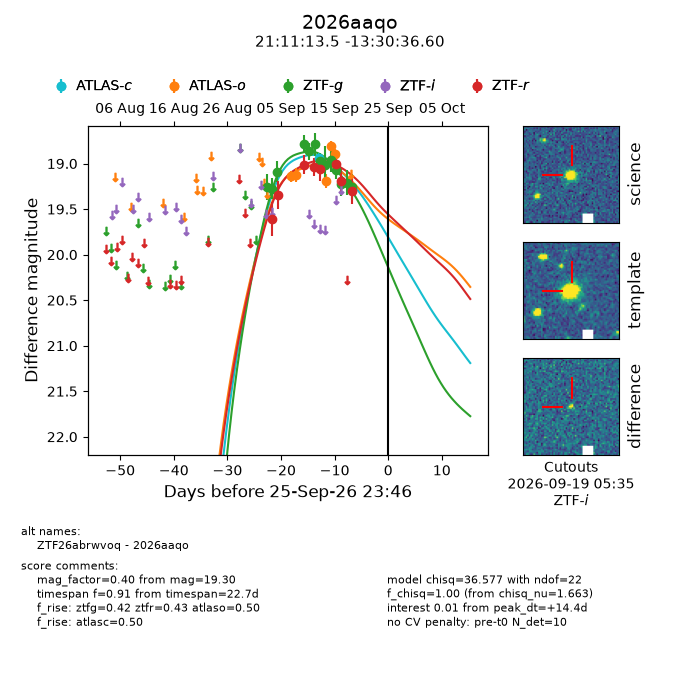
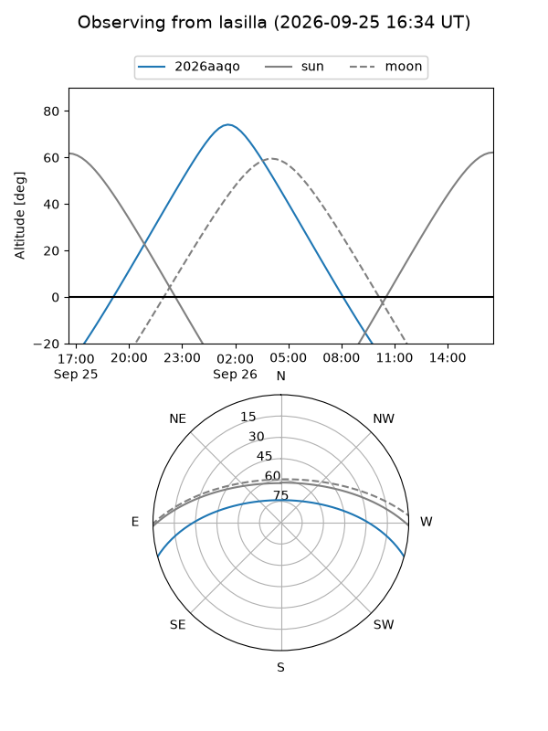
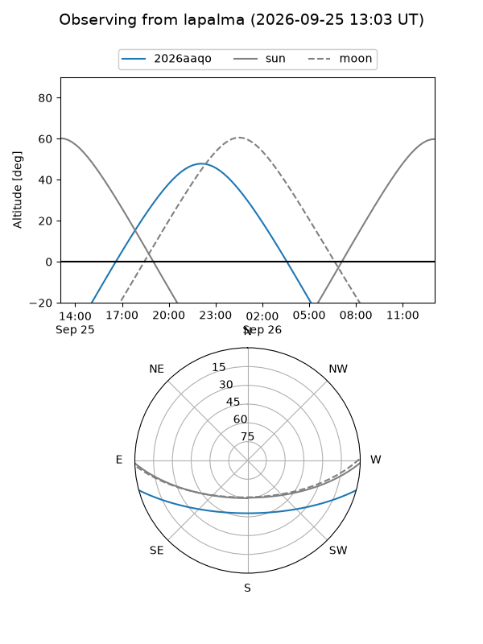
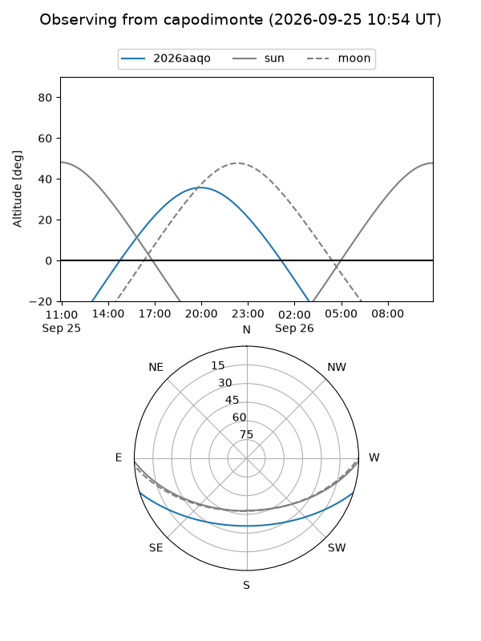
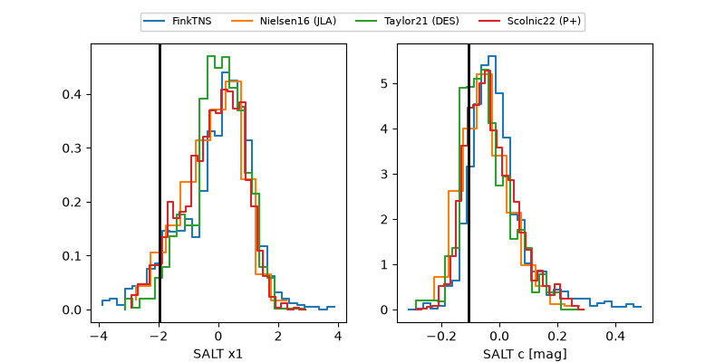

2026aaqo
Target 2026aaqo at 2026-09-26 11:18
Aliases and brokers:
FINK-ZTF: ztf.fink-portal.org/ZTF26abrwvoq
Lasair-ZTF: lasair-ztf.lsst.ac.uk/objects/ZTF26abrwvoq
ALeRCE-ZTF: alerce.online/object/ZTF26abrwvoq
YSE-PZ: ziggy.ucolick.org/yse/transient_detail/2026aaqo
TNS name: wis-tns.org/object/2026aaqo
Direct TNS query: direct search
alt names
ZTF26abrwvoq (ztf,fink_ztf)
2026aaqo (tns,yse)
Coordinates:
equatorial (ra, dec) = 317.8061,-13.51017
equatorial (HMS+DMS) = 21:11:13.47,-13:30:36.60
galactic (l, b) = (36.2387,-37.02880)
Flags:
TNS type: nan
peak dt: +14.9
Photometry:
last atlasc=18.93, atlaso=18.90, ztfg=19.26, ztfr=19.30
1 atlasc, 5 atlaso, 13 ztfg, 8 ztfr detections
Lightcurve

Visibility



Additional plots
